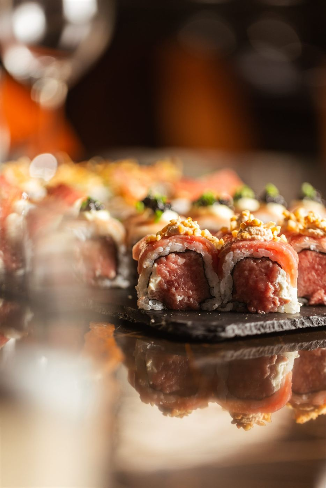
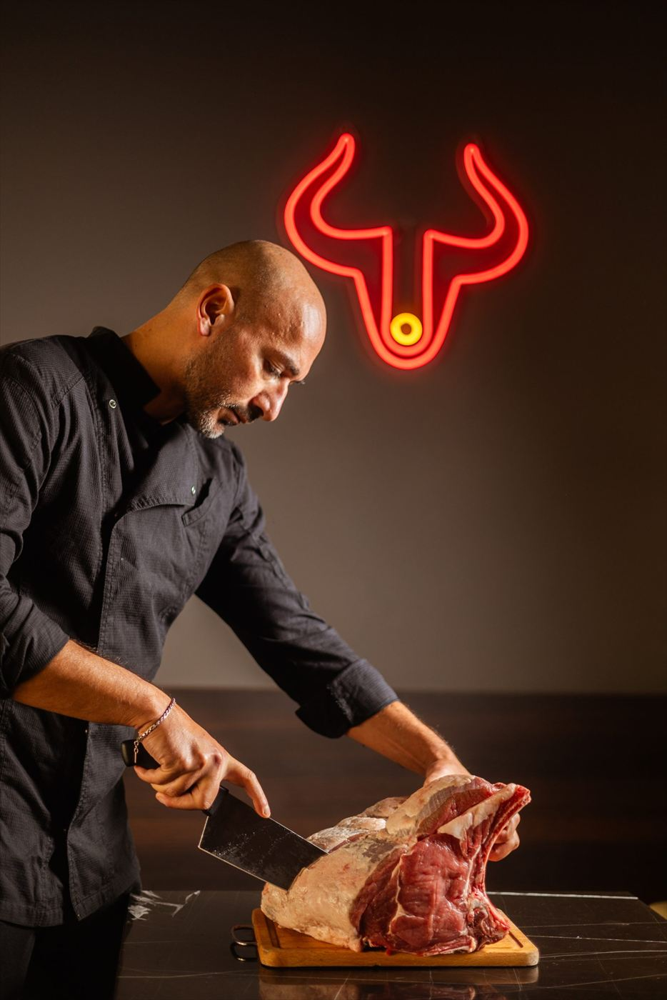
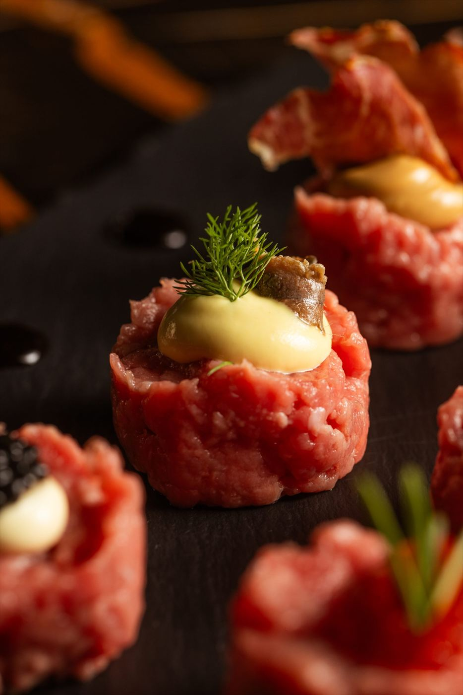
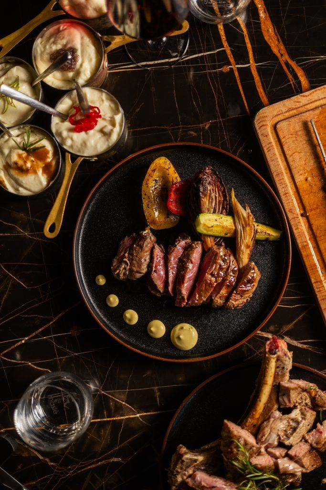
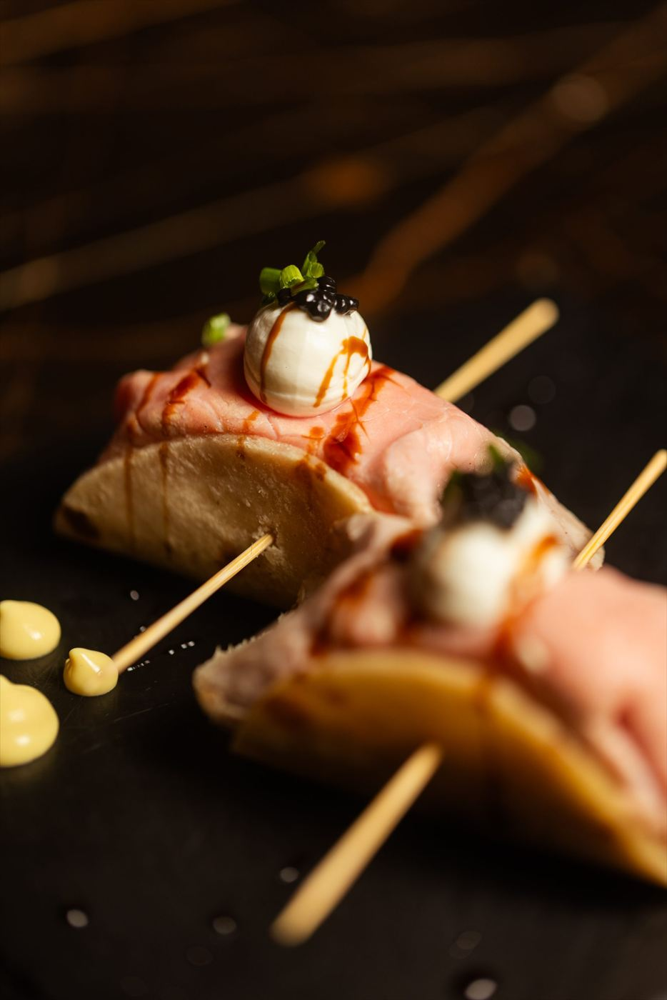
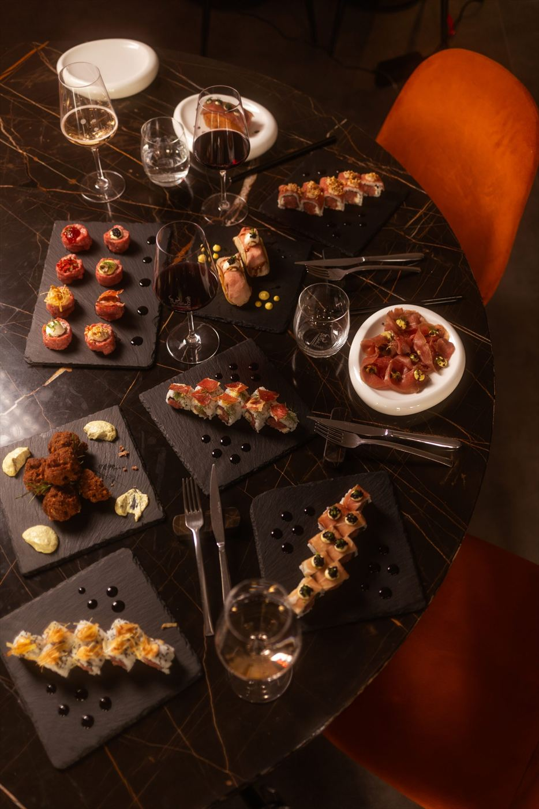
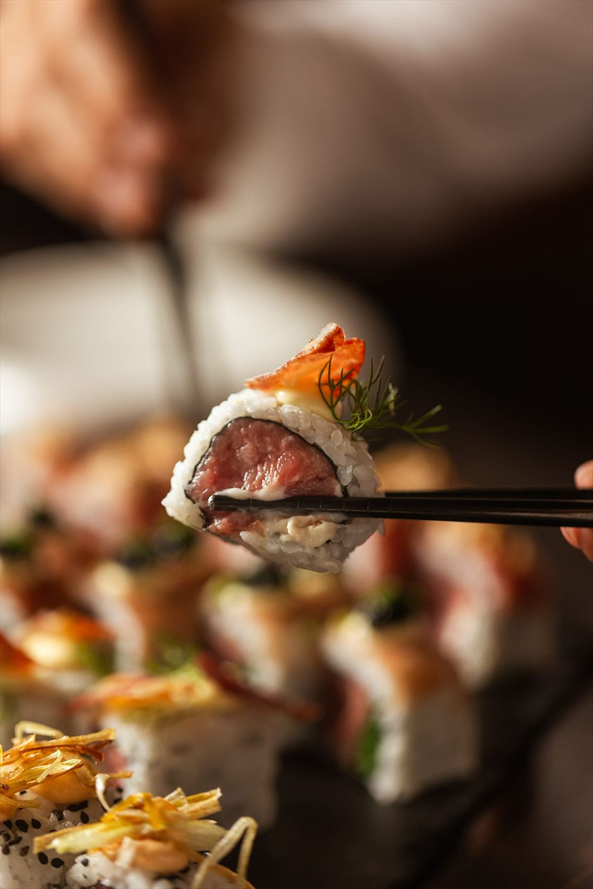
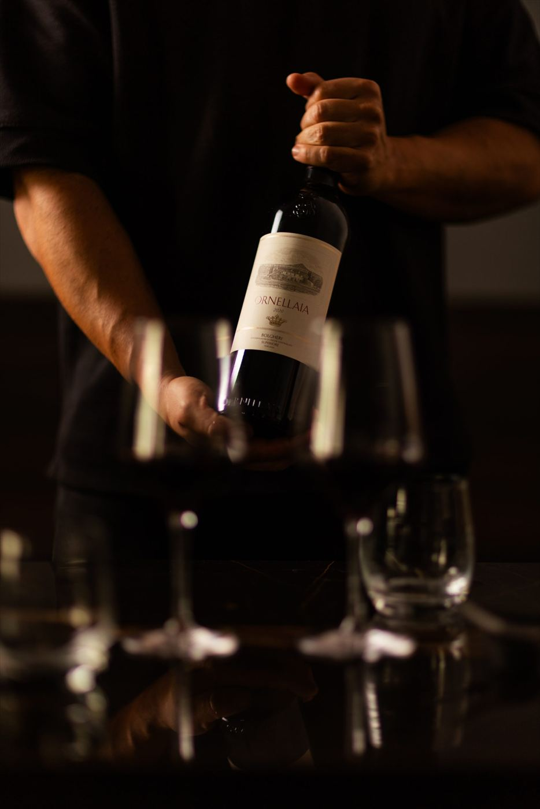
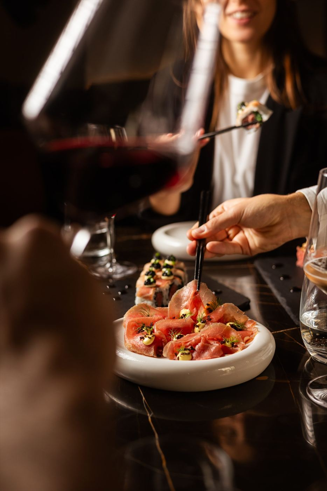
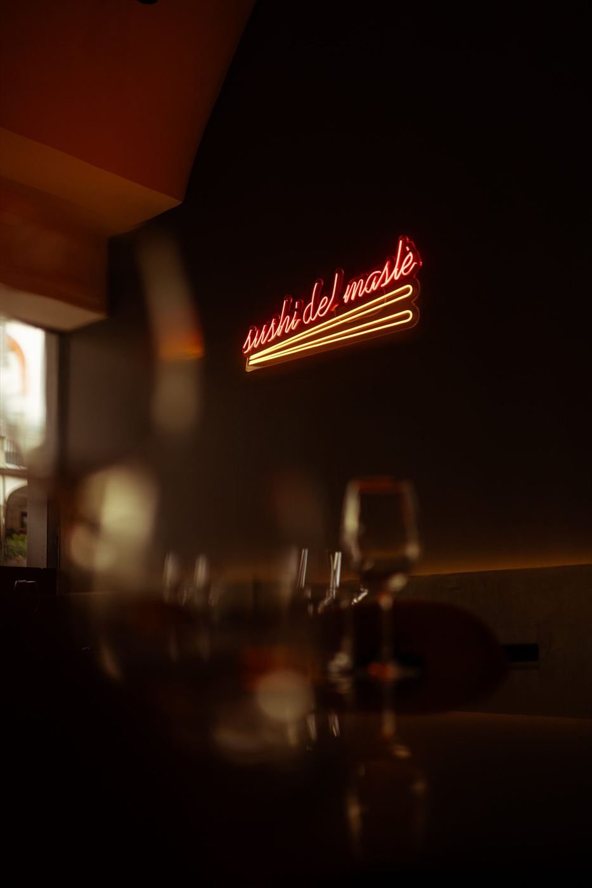

01
Il sushi
Uramaki, nigiri e battute di Fassona: sapori immediati, identità senza compromessi.
L'originale sushi di carne piemontese, dal 2017.
La delicatezza del taglio giapponese al servizio della migliore carne piemontese. La Fassona e la salsiccia di Bra sono le protagoniste, accompagnate dai profumi della nostra terra: nocciole, formaggi locali, tartufo.
Non è un semplice sushi: è un modo nuovo di raccontare la macelleria sabauda, con accostamenti affinati in quasi dieci anni di prove.


Come al kaiten di Tokyo, ma con la carne delle nostre parti. Passa sopra un piatto per fermare il nastro.
Foto dei nostri piatti. Il menù completo lo trovi nel locale e su richiesta.

Uramaki, nigiri e battute di Fassona: sapori immediati, identità senza compromessi.

Materia prima, fuoco e rispetto dei tempi. Per chi la carne la vuole cotta come si deve.

Da prendere con le mani e da dividere. Il lato più giocoso della cucina del Maslè.





Piazza Vittorio Emanuele II, 2
Lunedì – sabato · 19:00 – 23:30
Via Giuseppe Mazzini, 37
Lunedì – sabato · 19:00 – 23:30